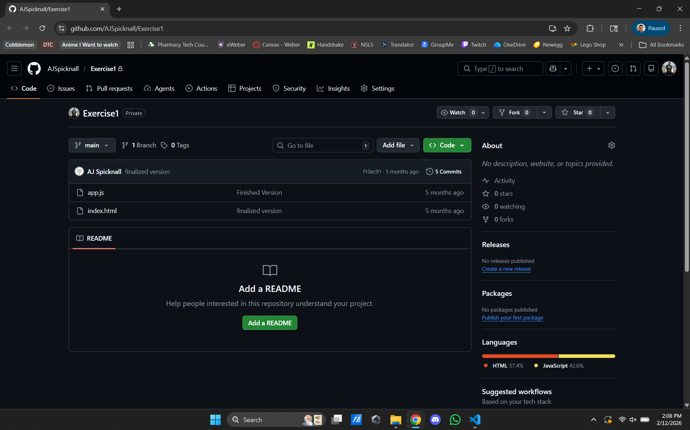
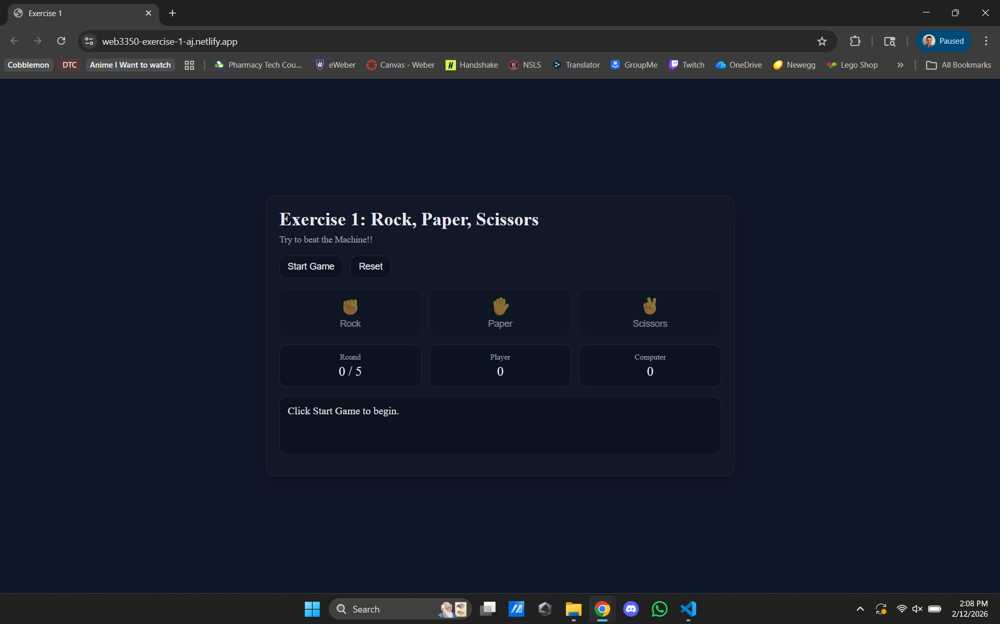

Rock-Paper-Scissors Game
A simple but fun twist on rock-paper-scissors with extra features and a more polished overall game feel.
Project Snapshot
Course/Context: WEB 3350
Role: Designer, content strategist, and developer
Tools: HTML, CSS, JavaScript
Live Demo: web3350-exercise-1-aj.netlify.app
Challenge
Standard rock-paper-scissors can feel repetitive, so the goal was to make gameplay more engaging without losing simplicity.
Solution
Expanded the core game with additional interaction features, cleaner feedback states, and a stronger visual system to improve flow and replay value.
Result
The final version feels faster, clearer, and more enjoyable, while still keeping the game easy to understand for first-time players.
Project Gallery

